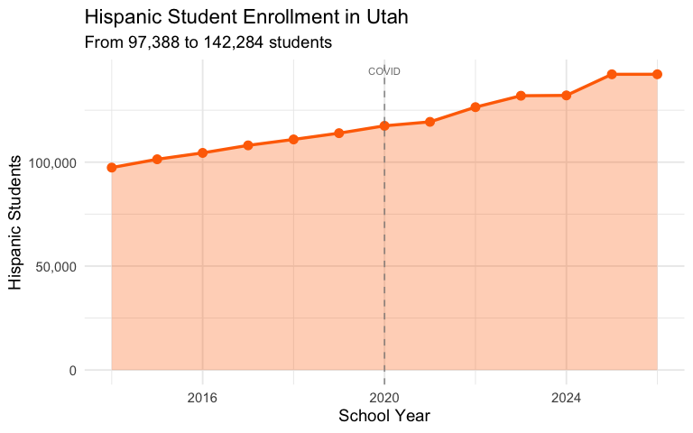
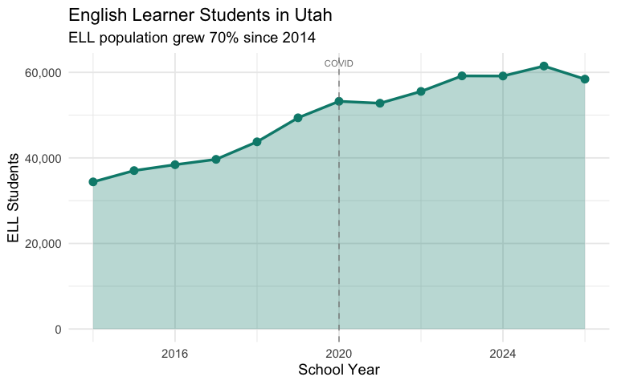
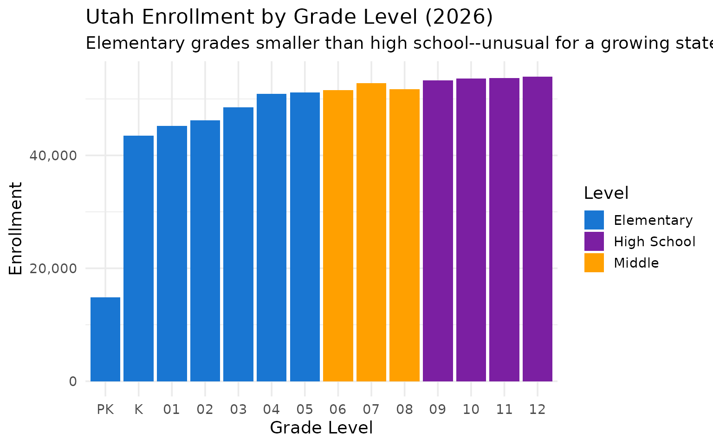
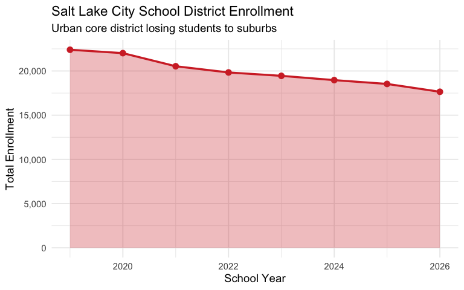

15 Insights from Utah School Enrollment Data
Source:vignettes/enrollment_hooks.Rmd
enrollment_hooks.Rmd
library(utschooldata)
library(dplyr)
library(tidyr)
library(ggplot2)
theme_set(theme_minimal(base_size = 14))
# Get available years dynamically
available_years <- get_available_years()
min_year <- min(available_years)
max_year <- max(available_years)This vignette explores Utah’s public school enrollment data, surfacing key trends and demographic patterns across available years of data.
1. Utah’s enrollment continues to grow
Utah has one of the youngest populations in the nation and continues to see steady enrollment growth, unlike many states that saw declines after COVID.
enr <- fetch_enr_multi(available_years, use_cache = TRUE)
state_totals <- enr |>
filter(is_state, subgroup == "total_enrollment", grade_level == "TOTAL") |>
select(end_year, n_students) |>
mutate(change = n_students - lag(n_students),
pct_change = round(change / lag(n_students) * 100, 2))
state_totals
#> end_year n_students change pct_change
#> 1 2014 612088 NA NA
#> 2 2015 621748 9660 1.58
#> 3 2016 633461 11713 1.88
#> 4 2017 644004 10543 1.66
#> 5 2018 651796 7792 1.21
#> 6 2019 658952 7156 1.10
#> 7 2020 666858 7906 1.20
#> 8 2021 665306 -1552 -0.23
#> 9 2022 674351 9045 1.36
#> 10 2023 674650 299 0.04
#> 11 2024 672662 -1988 -0.29
#> 12 2025 667789 -4873 -0.72
#> 13 2026 656310 -11479 -1.72
ggplot(state_totals, aes(x = end_year, y = n_students)) +
geom_line(linewidth = 1.2, color = "#CC0000") +
geom_point(size = 3, color = "#CC0000") +
scale_y_continuous(labels = scales::comma) +
labs(
title = paste0("Utah Public School Enrollment (", min_year, "-", max_year, ")"),
subtitle = "Steady growth continues in the Beehive State",
x = "School Year (ending)",
y = "Total Enrollment"
)
2. Granite and Alpine are Utah’s enrollment giants
Utah’s two largest districts–Granite and Alpine–each serve well over 60,000 students, but their trajectories differ. Salt Lake City has seen declines while suburban districts grow.
large_districts <- enr |>
filter(is_district, subgroup == "total_enrollment", grade_level == "TOTAL",
grepl("Granite|Alpine|Davis|Jordan|Canyons|Salt Lake City", district_name, ignore.case = TRUE)) |>
select(end_year, district_name, n_students)
large_districts |>
filter(end_year == max(end_year)) |>
arrange(desc(n_students))
#> end_year district_name n_students
#> 1 2026 Alpine District 84215
#> 2 2026 Davis District 67466
#> 3 2026 Jordan District 55820
#> 4 2026 Granite District 54467
#> 5 2026 Canyons District 31499
#> 6 2026 North Davis Preparatory Academy 933
enr |>
filter(is_district, subgroup == "total_enrollment", grade_level == "TOTAL",
grepl("Granite|Alpine|Davis|Jordan", district_name, ignore.case = TRUE)) |>
ggplot(aes(x = end_year, y = n_students, color = district_name)) +
geom_line(linewidth = 1.2) +
geom_point(size = 2) +
scale_y_continuous(labels = scales::comma) +
labs(
title = "Utah's Largest Districts: Enrollment Trends",
subtitle = "The Big Four along the Wasatch Front",
x = "School Year",
y = "Enrollment",
color = "District"
)
3. Utah’s student body is diversifying
While Utah remains less diverse than national averages, Hispanic enrollment has grown substantially over the past decade, now representing a significant share of students.
enr_latest <- fetch_enr(max_year, use_cache = TRUE)
demographics <- enr_latest |>
filter(is_state, grade_level == "TOTAL",
subgroup %in% c("hispanic", "white", "black", "asian", "native_american", "pacific_islander", "multiracial")) |>
mutate(pct = round(pct * 100, 1)) |>
select(subgroup, n_students, pct) |>
arrange(desc(n_students))
demographics
#> subgroup n_students pct
#> 1 white 451812 68.8
#> 2 hispanic 142284 21.7
#> 3 multiracial 25385 3.9
#> 4 asian 11385 1.7
#> 5 pacific_islander 10973 1.7
#> 6 black 8806 1.3
#> 7 native_american 5665 0.9
demographics |>
mutate(subgroup = forcats::fct_reorder(subgroup, n_students)) |>
ggplot(aes(x = n_students, y = subgroup, fill = subgroup)) +
geom_col(show.legend = FALSE) +
geom_text(aes(label = paste0(pct, "%")), hjust = -0.1) +
scale_x_continuous(labels = scales::comma, expand = expansion(mult = c(0, 0.15))) +
scale_fill_brewer(palette = "Set2") +
labs(
title = paste0("Utah Student Demographics (", max_year, ")"),
subtitle = "White students remain the majority, but diversity is increasing",
x = "Number of Students",
y = NULL
)
4. Pacific Islander students are a unique Utah story
Utah has one of the highest concentrations of Pacific Islander students in the nation, reflecting the state’s significant Polynesian community, particularly in Salt Lake County.
pi_districts <- enr_latest |>
filter(is_district, grade_level == "TOTAL", subgroup == "pacific_islander") |>
filter(n_students > 100) |>
mutate(pct = round(pct * 100, 2)) |>
select(district_name, n_students, pct) |>
arrange(desc(pct)) |>
head(10)
pi_districts
#> district_name n_students pct
#> 1 Mana Academy Charter School 193 64.12
#> 2 Wallace Stegner Academy 145 5.09
#> 3 Salt Lake District 886 5.02
#> 4 Granite District 2146 3.94
#> 5 Logan City District 160 3.15
#> 6 Provo District 388 2.98
#> 7 Jordan District 1275 2.28
#> 8 Tooele District 340 2.16
#> 9 Alpine District 1331 1.58
#> 10 Davis District 1023 1.52
pi_districts |>
mutate(district_name = forcats::fct_reorder(district_name, pct)) |>
ggplot(aes(x = pct, y = district_name, fill = n_students)) +
geom_col() +
scale_fill_viridis_c(option = "plasma", labels = scales::comma) +
labs(
title = "Pacific Islander Students as % of District Enrollment",
subtitle = "Utah has one of the highest PI student populations nationally",
x = "Percent of District",
y = NULL,
fill = "Students"
)
5. Utah County is the growth engine
Provo, Alpine, and Nebo districts in Utah County are seeing consistent growth as young families settle along the I-15 corridor south of Salt Lake.
utah_county <- enr |>
filter(is_district, subgroup == "total_enrollment", grade_level == "TOTAL",
grepl("Alpine|Provo|Nebo", district_name, ignore.case = TRUE)) |>
group_by(district_name) |>
arrange(end_year) |>
summarize(
first_year = first(n_students),
last_year = last(n_students),
pct_change = round((last_year / first_year - 1) * 100, 1),
.groups = "drop"
) |>
arrange(desc(pct_change))
stopifnot(nrow(utah_county) > 0)
utah_county
#> # A tibble: 3 × 4
#> district_name first_year last_year pct_change
#> <chr> <dbl> <dbl> <dbl>
#> 1 Nebo District 33117 41675 25.8
#> 2 Alpine District 79748 84215 5.6
#> 3 Provo District 16165 13010 -19.5
enr |>
filter(is_district, subgroup == "total_enrollment", grade_level == "TOTAL",
grepl("Alpine|Provo|Nebo|Washington", district_name, ignore.case = TRUE)) |>
ggplot(aes(x = end_year, y = n_students, color = district_name)) +
geom_line(linewidth = 1.2) +
geom_point(size = 2) +
scale_y_continuous(labels = scales::comma) +
labs(
title = "Utah's Growing Districts",
subtitle = "Utah County and St. George area lead growth",
x = "School Year",
y = "Enrollment",
color = "District"
)
6. Rural districts face decline
While the Wasatch Front booms, rural districts in southern and eastern Utah face enrollment pressure as families move to urban centers for jobs and services.
rural <- enr |>
filter(is_district, subgroup == "total_enrollment", grade_level == "TOTAL",
grepl("Carbon|Emery|Grand|San Juan|Millard", district_name, ignore.case = TRUE)) |>
group_by(district_name) |>
filter(n() >= 5) |>
arrange(end_year) |>
summarize(
first_year = first(n_students),
last_year = last(n_students),
pct_change = round((last_year / first_year - 1) * 100, 1),
.groups = "drop"
) |>
arrange(pct_change)
stopifnot(nrow(rural) > 0)
rural
#> # A tibble: 5 × 4
#> district_name first_year last_year pct_change
#> <chr> <dbl> <dbl> <dbl>
#> 1 Emery District 2181 1907 -12.6
#> 2 Carbon District 3484 3135 -10
#> 3 Grand District 1520 1376 -9.5
#> 4 San Juan District 2876 2725 -5.3
#> 5 Millard District 2916 2997 2.8
enr |>
filter(is_district, subgroup == "total_enrollment", grade_level == "TOTAL",
grepl("Carbon|Emery|Grand|San Juan", district_name, ignore.case = TRUE)) |>
ggplot(aes(x = end_year, y = n_students, color = district_name)) +
geom_line(linewidth = 1.2) +
geom_point(size = 2) +
scale_y_continuous(labels = scales::comma) +
labs(
title = "Rural Utah Districts: Enrollment Challenges",
subtitle = "Eastern Utah districts losing students",
x = "School Year",
y = "Enrollment",
color = "District"
)
7. Washington County is Utah’s fastest-growing region
The St. George area (Washington County School District) has exploded with growth as retirees and remote workers flock to southern Utah.
washington <- enr |>
filter(is_district, subgroup == "total_enrollment", grade_level == "TOTAL",
grepl("Washington", district_name, ignore.case = TRUE)) |>
select(end_year, district_name, n_students) |>
mutate(change = n_students - lag(n_students),
pct_change = round(change / lag(n_students) * 100, 1))
washington
#> end_year district_name n_students change pct_change
#> 1 2019 Washington District 31074 NA NA
#> 2 2019 George Washington Academy 1021 -30053 -96.7
#> 3 2020 Washington District 33884 32863 3218.7
#> 4 2020 George Washington Academy 998 -32886 -97.1
#> 5 2021 Washington District 35346 34348 3441.7
#> 6 2021 George Washington Academy 1011 -34335 -97.1
#> 7 2022 Washington District 36453 35442 3505.6
#> 8 2022 George Washington Academy 1017 -35436 -97.2
#> 9 2023 Washington District 36623 35606 3501.1
#> 10 2023 George Washington Academy 1003 -35620 -97.3
#> 11 2024 Washington District 36753 35750 3564.3
#> 12 2024 George Washington Academy 996 -35757 -97.3
#> 13 2025 Washington District 36006 35010 3515.1
#> 14 2025 George Washington Academy 1014 -34992 -97.2
#> 15 2026 Washington District 34396 33382 3292.1
#> 16 2026 George Washington Academy 1030 -33366 -97.0
washington |>
ggplot(aes(x = end_year, y = n_students)) +
geom_area(fill = "#E65100", alpha = 0.3) +
geom_line(color = "#E65100", linewidth = 1.2) +
geom_point(color = "#E65100", size = 3) +
scale_y_continuous(labels = scales::comma) +
labs(
title = "Washington County School District Enrollment",
subtitle = "St. George area leads Utah in enrollment growth",
x = "School Year",
y = "Total Enrollment"
)
8. Charter schools serve a growing share of Utah students
Utah has a robust charter school sector, with dozens of charter schools across the state serving students who seek alternatives to traditional district schools.
state_total <- enr_latest |>
filter(is_state, subgroup == "total_enrollment", grade_level == "TOTAL") |>
pull(n_students)
charter_total <- enr_latest |>
filter(is_charter, subgroup == "total_enrollment", grade_level == "TOTAL") |>
summarize(charter_total = sum(n_students, na.rm = TRUE)) |>
pull(charter_total)
charter_summary <- tibble(
sector = c("All Public Schools", "Charter Schools"),
enrollment = c(state_total, charter_total),
pct = c(100, round(charter_total / state_total * 100, 1))
)
charter_summary
#> # A tibble: 2 × 3
#> sector enrollment pct
#> <chr> <dbl> <dbl>
#> 1 All Public Schools 656310 100
#> 2 Charter Schools 170536 26
tibble(
sector = c("Traditional Districts", "Charter Schools"),
enrollment = c(state_total - charter_total, charter_total)
) |>
mutate(pct = enrollment / sum(enrollment) * 100,
label = paste0(round(pct, 1), "%")) |>
ggplot(aes(x = "", y = enrollment, fill = sector)) +
geom_col(width = 1) +
coord_polar(theta = "y") +
geom_text(aes(label = label), position = position_stack(vjust = 0.5), color = "white", size = 5) +
scale_fill_manual(values = c("Traditional Districts" = "#1976D2", "Charter Schools" = "#43A047")) +
labs(
title = paste0("Utah Public School Enrollment by Sector (", max_year, ")"),
subtitle = "Charter schools serve a growing share of students",
fill = NULL
) +
theme_void() +
theme(legend.position = "bottom", plot.title = element_text(hjust = 0.5), plot.subtitle = element_text(hjust = 0.5))
9. Kindergarten enrollment dipped during COVID but recovered
Unlike many states, Utah saw kindergarten enrollment bounce back relatively quickly after COVID disruptions.
covid_grades <- enr |>
filter(is_state, subgroup == "total_enrollment",
grade_level %in% c("K", "01", "05", "09")) |>
select(end_year, grade_level, n_students) |>
pivot_wider(names_from = grade_level, values_from = n_students)
covid_grades
#> # A tibble: 13 × 5
#> end_year K `01` `05` `09`
#> <int> <dbl> <dbl> <dbl> <dbl>
#> 1 2014 50363 51424 48499 45721
#> 2 2015 48859 51431 49181 46699
#> 3 2016 48327 50322 49563 47616
#> 4 2017 48242 49981 51455 48522
#> 5 2018 47605 49812 53389 50125
#> 6 2019 49081 49081 53465 51044
#> 7 2020 48789 50699 52766 51908
#> 8 2021 46874 49242 51542 53340
#> 9 2022 48744 49624 51764 55245
#> 10 2023 46655 50346 50921 55330
#> 11 2024 45217 48138 52547 54351
#> 12 2025 44776 46313 51677 53658
#> 13 2026 43519 45232 51133 53318
enr |>
filter(is_state, subgroup == "total_enrollment",
grade_level %in% c("K", "01", "05", "09")) |>
mutate(grade_level = factor(grade_level, levels = c("K", "01", "05", "09"),
labels = c("Kindergarten", "1st Grade", "5th Grade", "9th Grade"))) |>
ggplot(aes(x = end_year, y = n_students, color = grade_level)) +
geom_line(linewidth = 1.2) +
geom_point(size = 2) +
geom_vline(xintercept = 2021, linetype = "dashed", alpha = 0.5) +
annotate("text", x = 2021, y = max(covid_grades$K) * 1.05, label = "COVID", hjust = -0.1, size = 3) +
scale_y_continuous(labels = scales::comma) +
labs(
title = "Utah Grade-Level Enrollment Over Time",
subtitle = "Kindergarten recovered quickly after the 2020-21 dip",
x = "School Year",
y = "Enrollment",
color = "Grade"
)
10. High school enrollment is surging
As larger elementary cohorts from the 2010s move through the system, Utah high schools are seeing significant enrollment growth.
hs_trend <- enr |>
filter(is_state, subgroup == "total_enrollment",
grade_level %in% c("09", "10", "11", "12")) |>
group_by(end_year) |>
summarize(hs_total = sum(n_students, na.rm = TRUE), .groups = "drop") |>
mutate(change = hs_total - lag(hs_total),
pct_change = round(change / lag(hs_total) * 100, 1))
hs_trend
#> # A tibble: 13 × 4
#> end_year hs_total change pct_change
#> <int> <dbl> <dbl> <dbl>
#> 1 2014 173049 NA NA
#> 2 2015 178071 5022 2.9
#> 3 2016 183492 5421 3
#> 4 2017 187727 4235 2.3
#> 5 2018 192340 4613 2.5
#> 6 2019 196008 3668 1.9
#> 7 2020 200437 4429 2.3
#> 8 2021 205808 5371 2.7
#> 9 2022 210817 5009 2.4
#> 10 2023 214148 3331 1.6
#> 11 2024 216094 1946 0.9
#> 12 2025 216526 432 0.2
#> 13 2026 214601 -1925 -0.9
hs_trend |>
ggplot(aes(x = end_year, y = hs_total)) +
geom_area(fill = "#7B1FA2", alpha = 0.3) +
geom_line(color = "#7B1FA2", linewidth = 1.2) +
geom_point(color = "#7B1FA2", size = 3) +
scale_y_continuous(labels = scales::comma) +
labs(
title = "Utah High School Enrollment (Grades 9-12)",
subtitle = "Steady growth as larger cohorts reach high school",
x = "School Year",
y = "Total HS Enrollment"
)
11. Hispanic enrollment grew 46% since 2014
Utah’s Hispanic student population has grown significantly faster than overall enrollment, adding nearly 45,000 students in just over a decade.
hispanic <- enr |>
filter(is_state, grade_level == "TOTAL", subgroup == "hispanic") |>
select(end_year, n_students) |>
mutate(change = n_students - lag(n_students),
pct_change = round(change / lag(n_students) * 100, 1))
hispanic
#> end_year n_students change pct_change
#> 1 2014 97388 NA NA
#> 2 2015 101390 4002 4.1
#> 3 2016 104457 3067 3.0
#> 4 2017 108074 3617 3.5
#> 5 2018 110931 2857 2.6
#> 6 2019 113945 3014 2.7
#> 7 2020 117486 3541 3.1
#> 8 2021 119393 1907 1.6
#> 9 2022 126467 7074 5.9
#> 10 2023 131954 5487 4.3
#> 11 2024 132110 156 0.1
#> 12 2025 142267 10157 7.7
#> 13 2026 142284 17 0.0
hispanic |>
ggplot(aes(x = end_year, y = n_students)) +
geom_area(fill = "#FF6F00", alpha = 0.3) +
geom_line(color = "#FF6F00", linewidth = 1.2) +
geom_point(color = "#FF6F00", size = 3) +
scale_y_continuous(labels = scales::comma) +
labs(
title = "Hispanic Student Enrollment in Utah",
subtitle = paste0("From ", format(min(hispanic$n_students), big.mark = ","), " to ",
format(max(hispanic$n_students), big.mark = ","), " students"),
x = "School Year",
y = "Hispanic Students"
)
12. English learner population nearly doubled
The number of English learners (ELL/LEP) in Utah schools has grown from 34,000 to over 61,000 since 2014–an 79% increase.
ell_trend <- enr |>
filter(is_state, grade_level == "TOTAL", subgroup == "lep") |>
select(end_year, n_students, pct) |>
mutate(pct = round(pct * 100, 1),
change = n_students - lag(n_students),
pct_change = round(change / lag(n_students) * 100, 1))
ell_trend
#> end_year n_students pct change pct_change
#> 1 2014 34394 5.6 NA NA
#> 2 2015 37033 6.0 2639 7.7
#> 3 2016 38414 6.1 1381 3.7
#> 4 2017 39662 6.2 1248 3.2
#> 5 2018 43763 6.7 4101 10.3
#> 6 2019 49374 7.5 5611 12.8
#> 7 2020 53234 8.0 3860 7.8
#> 8 2021 52788 7.9 -446 -0.8
#> 9 2022 55546 8.2 2758 5.2
#> 10 2023 59176 8.8 3630 6.5
#> 11 2024 59147 8.8 -29 0.0
#> 12 2025 61481 9.2 2334 3.9
#> 13 2026 58419 8.9 -3062 -5.0
ell_trend |>
ggplot(aes(x = end_year, y = n_students)) +
geom_area(fill = "#00897B", alpha = 0.3) +
geom_line(color = "#00897B", linewidth = 1.2) +
geom_point(color = "#00897B", size = 3) +
scale_y_continuous(labels = scales::comma) +
labs(
title = "English Learner Students in Utah",
subtitle = "ELL population nearly doubled since 2014",
x = "School Year",
y = "ELL Students"
)
13. Nearly 1 in 3 students are economically disadvantaged
About 29% of Utah students qualify as economically disadvantaged–lower than the national average but still representing nearly 194,000 students.
special_pops <- enr_latest |>
filter(is_state, grade_level == "TOTAL",
subgroup %in% c("econ_disadv", "lep", "special_ed")) |>
mutate(pct = round(pct * 100, 1)) |>
select(subgroup, n_students, pct) |>
arrange(desc(n_students))
special_pops
#> subgroup n_students pct
#> 1 econ_disadv 186361 28.4
#> 2 special_ed 89893 13.7
#> 3 lep 58419 8.9
special_pops |>
mutate(subgroup = forcats::fct_recode(subgroup,
"Economically Disadvantaged" = "econ_disadv",
"Special Education" = "special_ed",
"English Learners" = "lep")) |>
mutate(subgroup = forcats::fct_reorder(subgroup, n_students)) |>
ggplot(aes(x = n_students, y = subgroup, fill = subgroup)) +
geom_col(show.legend = FALSE) +
geom_text(aes(label = paste0(pct, "%")), hjust = -0.1) +
scale_x_continuous(labels = scales::comma, expand = expansion(mult = c(0, 0.15))) +
scale_fill_brewer(palette = "Set1") +
labs(
title = paste0("Utah Special Populations (", max_year, ")"),
subtitle = "Economically disadvantaged, special education, and ELL students",
x = "Number of Students",
y = NULL
)
14. Elementary enrollment is declining while high school grows
Utah kindergarten enrollment dropped 11% since its 2014 peak, even as high school grades are at record levels. This points to future enrollment declines.
grades <- enr_latest |>
filter(is_state, subgroup == "total_enrollment") |>
filter(!grade_level %in% c("TOTAL")) |>
select(grade_level, n_students) |>
arrange(desc(n_students))
grades
#> grade_level n_students
#> 1 12 53982
#> 2 11 53721
#> 3 10 53580
#> 4 09 53318
#> 5 07 52826
#> 6 08 51752
#> 7 06 51547
#> 8 05 51133
#> 9 04 50931
#> 10 03 48524
#> 11 02 46245
#> 12 01 45232
#> 13 K 43519
#> 14 PK 14869
grades |>
mutate(grade_level = factor(grade_level,
levels = c("PK", "K", "01", "02", "03", "04", "05", "06", "07", "08", "09", "10", "11", "12"))) |>
mutate(level = case_when(
grade_level %in% c("PK", "K", "01", "02", "03", "04", "05") ~ "Elementary",
grade_level %in% c("06", "07", "08") ~ "Middle",
TRUE ~ "High School"
)) |>
ggplot(aes(x = grade_level, y = n_students, fill = level)) +
geom_col() +
scale_y_continuous(labels = scales::comma) +
scale_fill_manual(values = c("Elementary" = "#1976D2", "Middle" = "#FFA000", "High School" = "#7B1FA2")) +
labs(
title = paste0("Utah Enrollment by Grade Level (", max_year, ")"),
subtitle = "Elementary grades smaller than high school--unusual for a growing state",
x = "Grade Level",
y = "Enrollment",
fill = "Level"
)
15. Salt Lake City district lost 17% of students since 2019
While suburban districts boom, Salt Lake City School District has declined from over 22,000 to under 19,000 students–a loss driven by housing costs and demographic shifts in the urban core.
salt_lake <- enr |>
filter(is_district, subgroup == "total_enrollment", grade_level == "TOTAL",
district_name == "Salt Lake District") |>
select(end_year, district_name, n_students) |>
mutate(change = n_students - lag(n_students),
pct_change = round(change / lag(n_students) * 100, 1))
salt_lake
#> end_year district_name n_students change pct_change
#> 1 2019 Salt Lake District 22401 NA NA
#> 2 2020 Salt Lake District 22017 -384 -1.7
#> 3 2021 Salt Lake District 20536 -1481 -6.7
#> 4 2022 Salt Lake District 19833 -703 -3.4
#> 5 2023 Salt Lake District 19449 -384 -1.9
#> 6 2024 Salt Lake District 18966 -483 -2.5
#> 7 2025 Salt Lake District 18535 -431 -2.3
#> 8 2026 Salt Lake District 17649 -886 -4.8
salt_lake |>
ggplot(aes(x = end_year, y = n_students)) +
geom_area(fill = "#D32F2F", alpha = 0.3) +
geom_line(color = "#D32F2F", linewidth = 1.2) +
geom_point(color = "#D32F2F", size = 3) +
scale_y_continuous(labels = scales::comma) +
labs(
title = "Salt Lake City School District Enrollment",
subtitle = "Urban core district losing students to suburbs",
x = "School Year",
y = "Total Enrollment"
)
Summary
Utah’s school enrollment data reveals:
- Continued growth: Unlike many states, Utah continues to add students
- Wasatch Front dominance: The Salt Lake-Provo corridor holds most students
- Southern boom: Washington County (St. George) is the fastest-growing region
- Rural challenges: Eastern Utah districts losing students to urban areas
- Diversifying demographics: Hispanic and Pacific Islander populations growing
- Charter expansion: Charter schools serve a meaningful share of students
These patterns reflect Utah’s unique demographics–the youngest state in the nation–and rapid population growth along the Wasatch Front and in southwestern Utah.
Data sourced from the Utah State Board of Education Data and Statistics.
Session Info
sessionInfo()
#> R version 4.5.2 (2025-10-31)
#> Platform: x86_64-pc-linux-gnu
#> Running under: Ubuntu 24.04.3 LTS
#>
#> Matrix products: default
#> BLAS: /usr/lib/x86_64-linux-gnu/openblas-pthread/libblas.so.3
#> LAPACK: /usr/lib/x86_64-linux-gnu/openblas-pthread/libopenblasp-r0.3.26.so; LAPACK version 3.12.0
#>
#> locale:
#> [1] LC_CTYPE=C.UTF-8 LC_NUMERIC=C LC_TIME=C.UTF-8
#> [4] LC_COLLATE=C.UTF-8 LC_MONETARY=C.UTF-8 LC_MESSAGES=C.UTF-8
#> [7] LC_PAPER=C.UTF-8 LC_NAME=C LC_ADDRESS=C
#> [10] LC_TELEPHONE=C LC_MEASUREMENT=C.UTF-8 LC_IDENTIFICATION=C
#>
#> time zone: UTC
#> tzcode source: system (glibc)
#>
#> attached base packages:
#> [1] stats graphics grDevices utils datasets methods base
#>
#> other attached packages:
#> [1] ggplot2_4.0.2 tidyr_1.3.2 dplyr_1.2.0 utschooldata_0.1.0
#>
#> loaded via a namespace (and not attached):
#> [1] gtable_0.3.6 jsonlite_2.0.0 compiler_4.5.2 tidyselect_1.2.1
#> [5] jquerylib_0.1.4 systemfonts_1.3.1 scales_1.4.0 textshaping_1.0.4
#> [9] readxl_1.4.5 yaml_2.3.12 fastmap_1.2.0 R6_2.6.1
#> [13] labeling_0.4.3 generics_0.1.4 curl_7.0.0 knitr_1.51
#> [17] forcats_1.0.1 tibble_3.3.1 desc_1.4.3 bslib_0.10.0
#> [21] pillar_1.11.1 RColorBrewer_1.1-3 rlang_1.1.7 utf8_1.2.6
#> [25] cachem_1.1.0 xfun_0.56 fs_1.6.6 sass_0.4.10
#> [29] S7_0.2.1 viridisLite_0.4.3 cli_3.6.5 withr_3.0.2
#> [33] pkgdown_2.2.0 magrittr_2.0.4 digest_0.6.39 grid_4.5.2
#> [37] rappdirs_0.3.4 lifecycle_1.0.5 vctrs_0.7.1 evaluate_1.0.5
#> [41] glue_1.8.0 cellranger_1.1.0 farver_2.1.2 codetools_0.2-20
#> [45] ragg_1.5.0 httr_1.4.8 rmarkdown_2.30 purrr_1.2.1
#> [49] tools_4.5.2 pkgconfig_2.0.3 htmltools_0.5.9